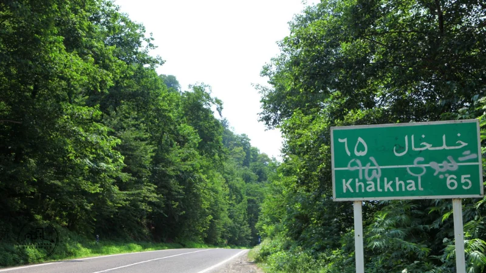
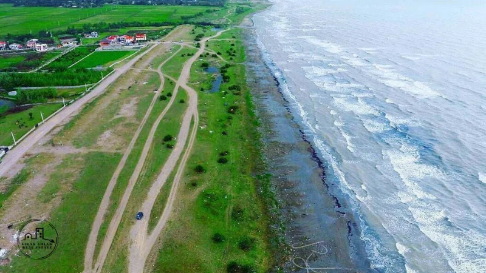
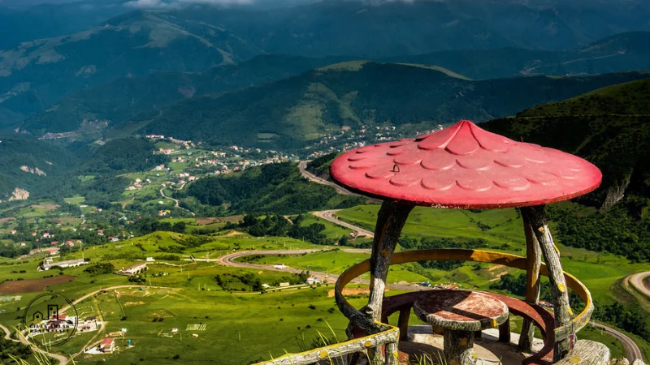
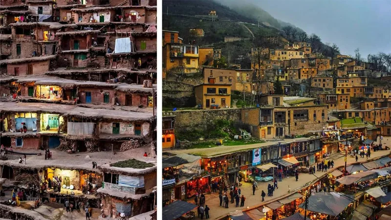
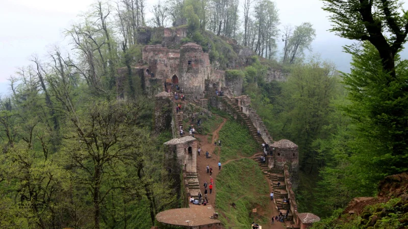
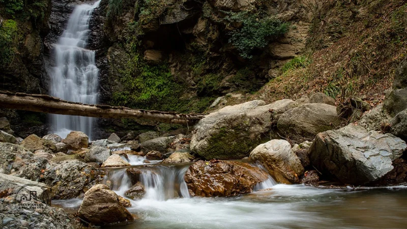

جنگل اسالم
شهر اسالم در استان گیلان و شهر خلخال در استان آذربایجان شرقی واقع شدهاند.
جادهای که این دو منطقه را به یکدیگر متصل میکند را باید یکی از زیباییهای بیبدیل طبیعت ایران و استان گیلان دانست.

ساحل گیسوم
منطقه تالش در گیلان محل بسیاری از زیباییهای طبیعی این استان است. از جمله این زیباییها نیز باید به جنگل و ساحل گیسوم اشاره کرد.
منطقه گیسوم از معدود مناطق گیلان است که در آن فاصله دریا و جنگل تنها چند قدم است.

گردنه حیران
آستارا در شرقیترین نقطه استان گیلان نیز دارای طبیعت بسیار زیبایی است. در میان این همه زیبایی هم، گردنه حیران بیش از هرجایی شهرت دا

ماسوله
حتما پیش از این نیز نام ماسوله را شنیدهاید. اگر در بهار گیلان به دنبال مقصدی هستید که علاوه بر زیباییهای طبیعت، جاذبههای فرهنگی و تاریخی نیز داشته باشد؛ توصیه میکنیم حتما سری به روستای پلکانی ماسوله بزنید. این روستا که در شهرستان فومن واقع شده است؛ از نظر معماری و سبک ساخت خانهها بسیار جالب و متفاوت است.

قلعه رود خان
اگر توان بالا رفتن از بیش از ۱۶۰۰ پله باستانی را دارید؛
قلعه رودخان در شهرستان فومن منتظر شماست. این قلعه هزاران ساله در دل طبیعت بکر و بسیار جذابی قرار گرفته است. از این رو میتوان آن را از معدود جاذبههای باستانی حاضر در طبیعت سبز گیلان دانست.
با هر قدمی که بر روی پله بعدی این قلعه میگذارید؛ مناظر جذاب و زیبایی را مشاهده خواهید کرد.

ابشار دودزن
در ۲۴ کیلومتری شهر شفت و در منطقه خرم کش آبشاری خاص و جذاب وجود دارد.
این آبشار با ارتفاع ۵۴ متری یکی از جاذبههای طبیعی و عجیب استان گیلان است.
در واقع این آبشار در دل فضایی انبوه از درختان فرو رفته است.
طوری که وقتی به پایین آبشار میروید؛ خبری از نور مستقیم خورشید نیست.